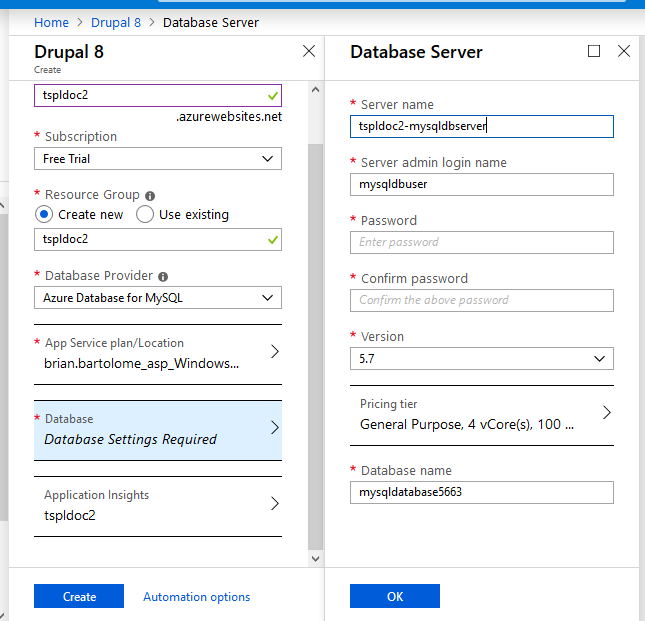
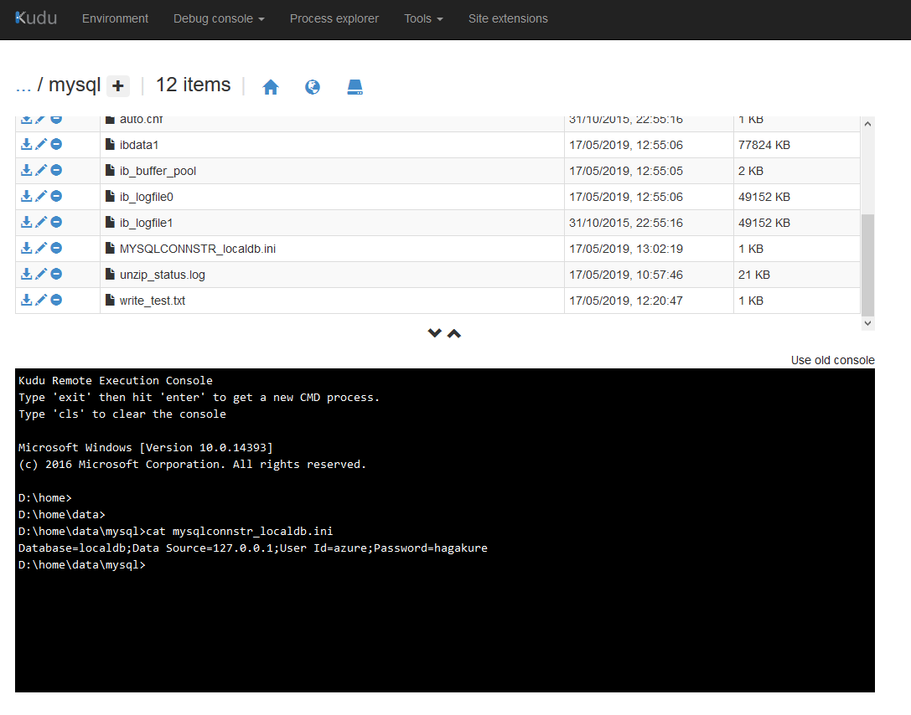

Setting up Drupal 8 on Azure¶
Users can set up Drupal for testing plugins, as a sandbox environment, or for uploading supplementary documentation.
Microsoft Azure provides several options for setting up Drupal with minimal configuration steps needed. These include the following solutions:
Drupal 8
Drupal over Bitnami
Drupal Container Image
Drupal on a Linux Web App with MySQL or PostgreSQL
Note
Users can opt to set up either a Windows or Linux virtual machine and manually install and manage Drupal. This article focuses on setting up Drupal using the Drupal 8 solution provided by the publisher.
Creating the Drupal App service¶
To set up Drupal 8:
From the Azure portal, search for
Drupalfrom the Marketplace.Select Drupal 8, and then click Create.
Enter an
App nameandResource Group nameif needed. Select the applicable Azure Subscription and Database Provider.By default, Azure Database for MySQL is selected as the Database Provider. User and password settings for the database are entered on the Database blade and required before creating the Drupal 8 app. Inputting database information does not automatically create a MySQL, MariaDB, PostgreSQL, or SQLite database. An SQL database on Azure should be set up before creating the Drupal App Service.
For this example, MySQL In App is selected, which means that MySQL is managed as part of the application, rather than through the Azure portal.
Note
The database name, username, and password need to be entered during the initial Drupal configuration regardless of which Database Provider is selected while creating the App Service. If you opted for Azure Database for MySQL, ensure that the client machine is allowed access to the database before attempting to set up Drupal. For additional details, refer to Azure Database for MySQL.
Click Create. Once deployment is complete, the Drupal application is listed under App Services.
Managing MySQL In App settings¶
Running Drupal with MySQL in App is not recommended for production environments. However, it is adequate for serving a basic Drupal environment. Filling out database settings in the Drupal interactive installer
If MySQL in App was selected as the Database Provider when setting up the Drupal app service, the database name, username, and password are automatically inputted in the fields.
Reviewing MySQL in App settings¶
To verify MySQL In App settings and database paths, click App Service > Drupal app name > MySQL In App.
Using phpMyAdmin¶
Although phpMyAdmin can be used to manage Drupal databases that use the MySQL In App option, it is not recommended. There are several issues related to accessing phpMyAdmin over Azure, although users can initially access phpMyAdmin after first setting the App Service.
To launch phpMyAdmin for the database, click App Service > Drupal app name > MySQL In App > Manage.
As an alternative, users can access phpMyAdmin using the URL https://<app service>.scm.azurewebsites.net/phpmyadmin.
Using Kudu to access database files¶
The database string, including the password, can also be viewed in plain text by using Kudu to view the MYSQLCONNSTR_localdb.ini and MYSQLCONNSTR_localdb.txt file.
To view MySQL files using Kudu, click Advanced tools > Go > Debug console > CMD.
Launching the Drupal interactive installer¶
The URL of the web application is listed in the Overview blade of the App Service. Once the status of the App Service is Running, open the URL to begin using Drupal.
For additional details regarding the initial setup steps, refer to the Drupal 8 User Guide.
Installation and setup notes¶
Issues with accessing phpMyAdmin for MySQL in App¶
After setting up the Drupal App Service from the portal, users may not be able to access phpMyAdmin by clicking App Service > Drupal app name > MySQL In App > Manage. The system will prompt for a username and password, but will reject the database username and password set in MYSQLCONNSTR_localdb.ini.
To resolve this issue, launch the Drupal configuration page first. Once the Drupal site is accessed, opening the phpMyAdmin linke (e.g. https://tcdoc2.scm.azurewebsites.net/phpmyadmin/) will no longer prompt for a username and password.
After completing the Drupal interactive installer, ensure that the user created during setup is logged in before attempting to access phpMyAdmin again. Otherwise, access to the database is denied.
Anonymous logon¶
By default, the Drupal web application accepts anonymous access and users are not prompted for logins. To change this setting, click App Services > Drupal app name > Authentication / Authorization > On.